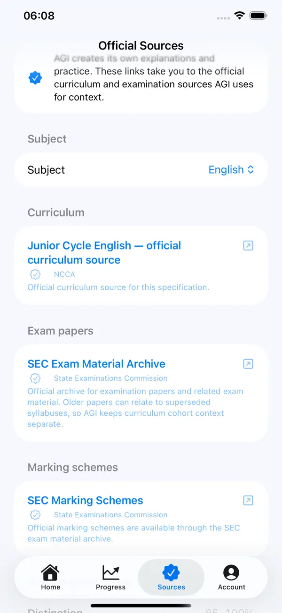

For parents & guardians
Understand what AGI does before your student uses it.
AI Grind Ireland is designed as an independent study companion with visible curriculum setup, progress tracking, optional AI permission and clear subscription controls.

Inside AI Grind Ireland
Useful trust built into the app
The Sources area puts curriculum, State Examinations Commission material and marking-scheme links within easy reach of the student.
What the student sets up
The student chooses their school year, programme, subjects, subject levels and explanation style. This lets AGI select relevant curriculum content rather than treating every student as the same age or level.
What AGI remembers
To continue the study experience, AGI can save grind questions, answers, teaching feedback, scores, topic mastery and revision dates. This is what allows later practice to focus on areas that need more work.
AI study features require permission
The app has an “Allow AI study features” control. When enabled, the current study question and relevant curriculum context may be sent securely to the AI provider so AGI can teach, generate a grind or mark an answer. The setting can be changed later.
Official sources are built in
AGI includes a dedicated Sources area with direct links to relevant curriculum, examination material and marking schemes, making trusted reference material easy to reach.
Privacy controls
Students can change study setup, turn AI study features on/off, sign out and permanently delete their account from the app.
Apple billing
Subscription payment details are handled by Apple. Restore Purchases is available, and subscriptions can be managed or cancelled in Apple Account settings.
What AGI is not
AGI is not a replacement for teachers, schools, official examination guidance, counselling or emergency support. It is a study tool intended to help students practise, revise and understand curriculum topics more effectively.